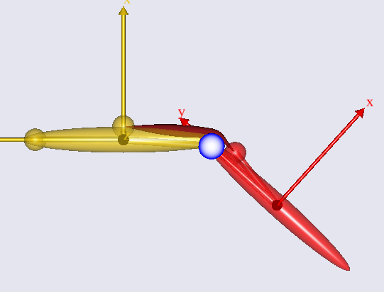

Lesson 1: The Baseline Model¶
Caution
Old tutorial: This tutorial has not yet been updated to ver. 7 of the AnyBody Modeling System. Some concepts may have changed.
In this lesson we familiarize ourselves with the simple knee model. If
you have not already downloaded the model, then please do so from this
link: DemoSimpleKnee.any. Save the
model to a working area of your hard disk, for instance in
DocumentsAnyScriptstutorials. Then open the model in AnyBody, expand
“Study” in the Operations Tree, select InverseDynamics and click Run.
This is what the model looks like:

The yellow segment is the thigh and the red segment is the shank. The thigh is fixed to the ground frame at the hip joint and the thigh and the shank are joint at the knee joint, which in this version of the model is just an idealized revolute joint symbolized by the blue circle. This circle is actually the projection of a cylinder representing the femoral condyles, and over it wraps the single muscle that actuates the system. We can think of this as the quadriceps muscle. You can see the muscle bulging in response to the increased load as the knee extends.
So far, this is just an ordinary AnyBody model with no special features. In the next lesson we shall see how this model can be upgraded with a more realistic knee joint using the Force dependent kinematics (FDK) solver of the system:
See also
Next lesson: Lesson 2: Adding FDK Features.
 Please report it here...
Please report it here...